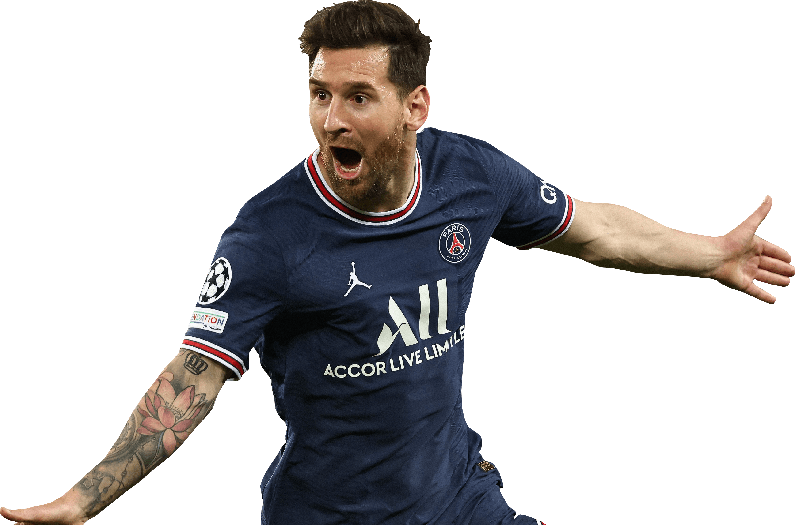

Lionel Andrés Messi nasceu em Rosário, Argentina, no dia 24 de junho de 1987. Desde a infância mostrou interesse pelo futebol. Jogou em um pequeno clube chamado Abanderado Grandoli, localizado perto de sua casa. Com 7 anos Messi começou a jogar no Newell's Old Boys. Quando estava com 11 anos foi diagnosticado com um problema hormonal que retardava seu crescimento. A partir de então Messi foi submetido a um tratamento hormonal.
|
|
Com 13 anos, quando ainda fazia parte das divisões de base do Newell's Old Boys, Messi foi levado por seu pai, Jorge Messi, para a Espanha, onde morava uma prima da família. Depois de passar por várias categorias do Barcelona, com 16 anos, Messi estreou na equipe titular em uma partida amistosa contra o Futebol Clube do Porto, na inauguração do Estádio do Dragão em 16 de novembro de 2003. No dia 16 de outubro de 2004, na temporada 2004-2005 da Liga Espanhola, Messi fez sua estreia oficial na primeira divisão da Liga Espanhola na partida contra o rival Espanyol. Messi entrou no segundo tempo e se tornou o jogador mais jovem a representar o Barcelona em uma competição oficial. Ainda na temporada 2004-2005 da Liga Espanhola Messi fez seu primeiro gol na vitória sobre o Albacete, no dia 1 de maio de 2005.
Em 2008 o Barcelona ganhou a Copa do Rei, A Liga e a Liga dos Campeões. Na mesma temporada, Messi atuou em 51 jogos e fez 38 gols. O clube teve acesso à Superliga da Espanha, à Super Copa da Europa e ao Mundial de Clubes, levando o troféu em todos eles. Na era Guardiola, que foi de 2008 a 2012, o Barcelona conquistou 14 títulos em 18 campeonatos que participou, como também conquistou mais duas ligas espanholas (2009-2010 e 2010-2011), a Liga dos Campeões em (2010-2011) e a Copa do Rei (2011-2012). Nesse período Messi conquistou a Bola de Ouro em 2009, 2010 e 2011.
Em 2022 Messi se destacou na Copa do Mundo do Catar e levou a Argentina a Conquistar o título de Campeã do Mundo, sendo eleito o melhor jogador da copa. Durante os 21 anos que jogou no Barcelona Messi tornou-se o maior artilheiro da história do clube, com 672 gols em 778 jogos. Foi o jogador que mais marcou gols em uma única temporada: 91 gols em 2012. Messi foi o jogador que mais conquistou títulos com o clube catalão, 34 no total, incluindo quatro ligas dos campeões (2006, 2009, 2011 e 2015) e dez campeonatos espanhóis.
A era Messi chegou ao fim no dia 8 de agosto de 2021, quando seu contrato não foi renovado e o jogador, muito emocionado, se despediu do time em uma coletiva de imprensa.
|  |
No dia 10 de agosto de 2021 foi anunciada a contratação de Messi pelo PSG. No dia 11, o jogador foi apresentado aos torcedores diante de um auditório lotado no Parque dos Príncipes, ao lado de Nasser Al-Khelaïfi, presidente do clube francês. O jogador recebeu a camisa número 30, que foi seu primeiro número como jogador profissional.
Messi foi contratado para jogar ao lado dos atacantes Neymar e Mbappé. Sua partida de estreia, na temporada 2021-2022, foi pelo Campeonato Francês, contra o Stade Reims.
Sua atuação na temporada foi prejudicada por uma lesão no joelho e por ter sido infectado pela Covid-19. Mesmo assim, Messi fechou a temporada com 34 jogos e 11 gols. Na temporada 2022-2023, Messi já participou de 24 jogos e fez 12 gols.
Ligue 1: 2021–22
Supercopa da França: 2022

|
Considerado um dos maiores jogadores de futebol de todos os tempos, Lionel Messi é, ao lado de Maradona, o principal nome da história da seleção argentina. Ao todo, o atacante marcou 104 gols em 176 jogos, o que faz do jogador o maior artilheiro da história da Albiceleste.
No entanto, a trajetória do camisa 10 na seleção começou de maneira conturbada. Em 2005, aos 18 anos, Messi entrou na metade da segunda etapa no lugar de Lisandro López, mas acabou expulso do amistoso contra a Hungria em menos de um minuto. Após tentativa de lance individual, o jovem craque acertou uma cotovelada no rosto do zagueiro Vilmos Vanczák - o árbitro da partida viu o lance e aplicou o cartão vermelho direto.
Campeão da Copa do Mundo (2022), Copa América (2021) e medalhista de ouro olímpico (2008), Messi é o jogador que mais defendeu a Argentina na história.
Chuteira de Ouro: 2009-2010, 2011-2012, 2012-2013, 2016-2017, 2017-2018, 2018-2019
Bola de Ouro: 2009,2010,2011,2012, 2015, 2019, 2021